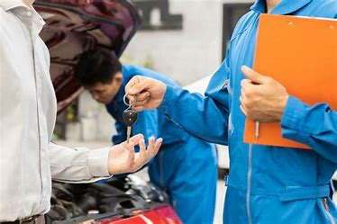

SERVICIO AUTOMOTRIZ TORO MOTOR GARAGE
NUESTROS VALORES

- Compromiso
- Generar la aptitud de firmeza, seguridad y confianza al transformar una la promesa en realidad.
- Honestidad
- Tener el pudor, la dignidad, la sinceridad, la justicia, la rectitud y la honradez en todo momento.
- Respeto
- Lograr una armoniosa interacción social haciendo referencia a reconocer el derecho ajeno; es el reconocimiento, consideración, atención o diferencia, que se deben a las otras personas.
- Responsabilidad
- Cumplimiento de las obligaciones contraídas en diversos ámbitos.
- Confianza
- Ser éticos en los trabajos que realizamos.
NUESTROS OBJETIVOS
- Mantener la confianza de nuestros clientes, satisfaciendo cada necesidad que se les presente con sus vehículos.
- Brindar a nuestros clientes información técnica de sus vehículos, para mejorar el rendimiento y durabilidad de los mismos.
- Capacitar constantemente a nuestro personal para ofrecer un servicio profesional y de calidad.
- Garantizar su seguridad y el estado real del mantenimiento de su vehículo por medio de nuestra revisión general.
- Cumplir con el tiempo y calidad de cada servicio.